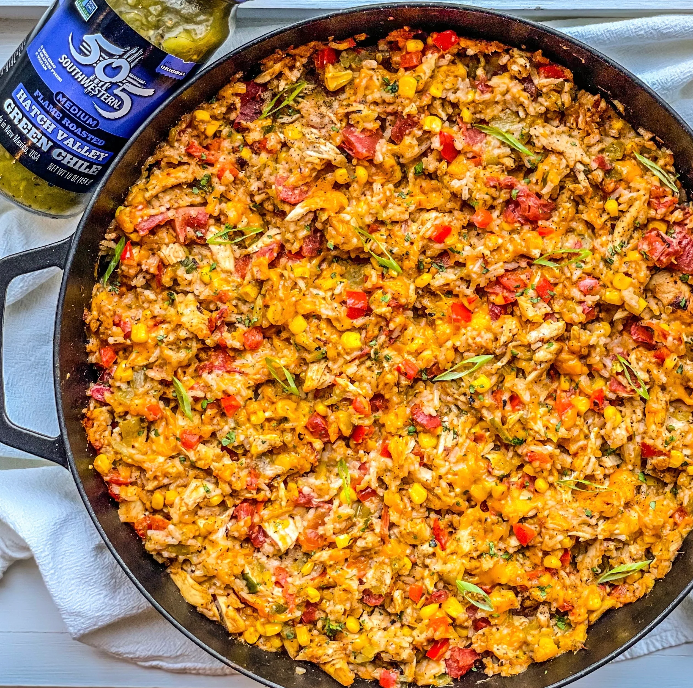

Home
Green Chile Chicken and Rice Casserole

Description:
Green chile chicken and rice casserole is a creamy, cheesy dinner packed with shredded chicken, green chiles,
and ranch flavor. This easy, comforting casserole comes together quickly with simple ingredients. Top with
cilantro, tomatoes, and jalapenos for a fresh finish.
Ingredients:
- 1 1/2 cups uncooked rice
- 3 cups water
- 3 cups cooked shredded chicken
- 1 (10.75 ounce) can condensed cream of chicken soup
- 1 1/2 cups sour cream
- 1 (4.5 ounce) can chopped green chiles
- 1 (1 ounce) package ranch dressing mix
- 2 cups shredded Mexican cheese blend
- cilantro, diced tomatoes, and thinly sliced jalapeno peppers for topping
Steps:
-
Bring water and rice to a boil in a saucepan. Reduce heat to medium-low, cover, and simmer until rice is
tender and water is absorbed, 20 to 25 minutes.
- Preheat the oven to 375 degrees F (190 degrees C).
-
Combine chicken, soup, sour cream, chiles, ranch, and 1 cup Mexican cheese blend in a bowl. Add cooked rice
and stir until well combined.
- Pour mixture into a lightly greased baking dish and top with remaining cheese.
-
Bake in the preheated oven until casserole is browned around the edges and bubbly, about 25 minutes. Serve
with toppings of your choice.